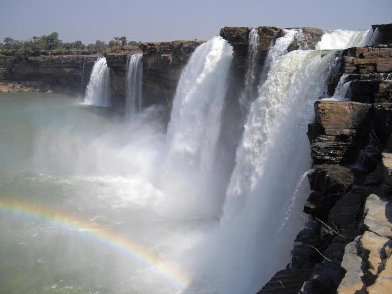
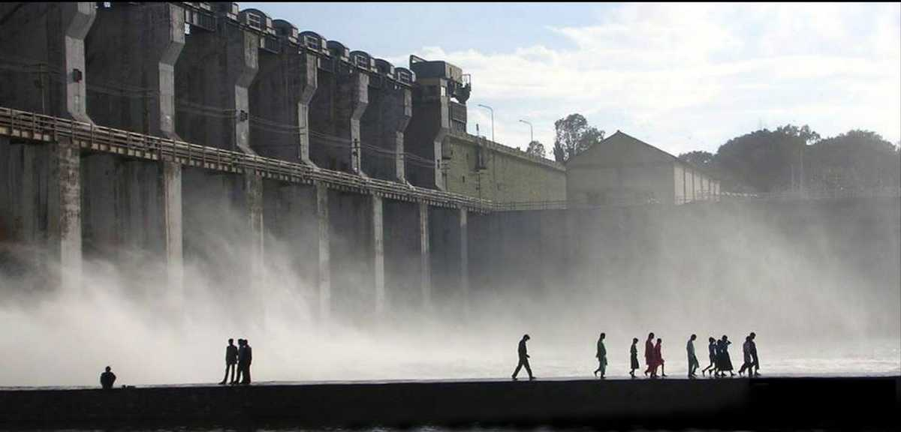
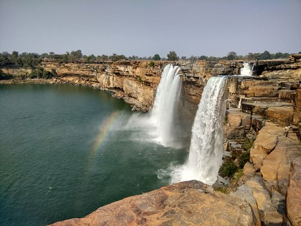
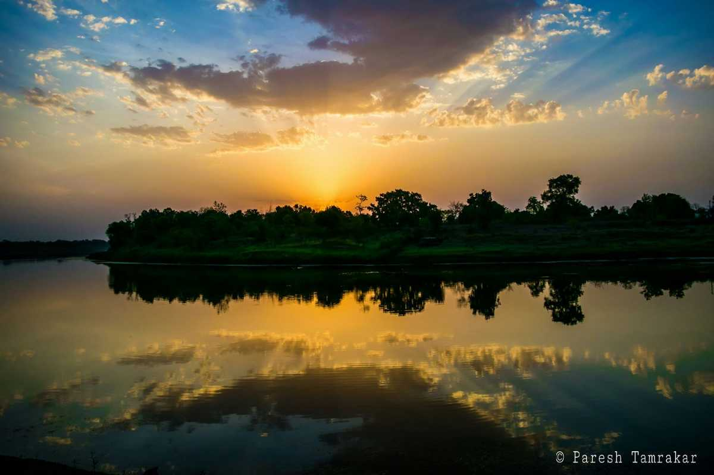
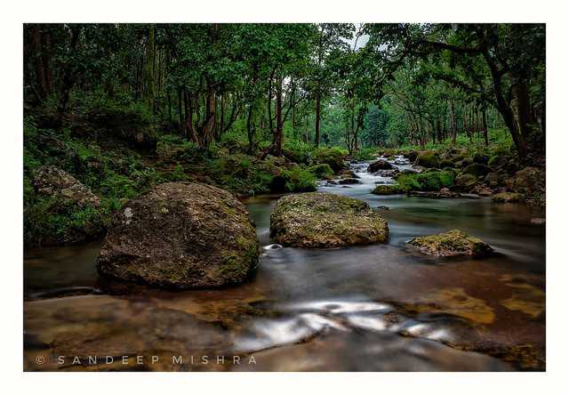
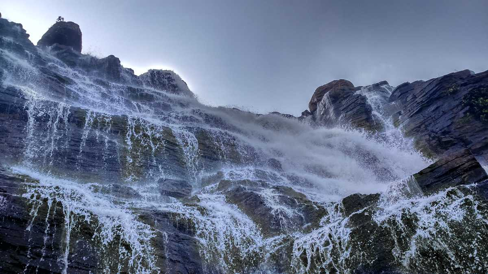

CHIRMIRI
Chirmiri is a hill station and a Municipal Corporation in the newly formed District Manendragarh-Chirmiri-Bharatpur of the state of Chhattisgarh, India. Former, it was the part of Koriya district till 15 August 2021, when the Chief Minister Bhupesh Baghel declared a separate district Manendragarh-Chirmiri-Bharatpur.
DHAMTARI
Dhamtari is a municipal corporation and headquarters of the Dhamtari district in the state of Chhattisgarh, India, which is part of the Mahasamund Lok Sabha constituency formed on 6 July 1998. The district is home to 3.13 percent of Chhattisgarh's total population.
JADGALPUR
Jagdalpur is a city in the tribal district of Bastar in Chhattisgarh, a state in central India. On the banks of the Indravati River, ornate Bastar Palace was built by the region’s former kings. The nearby Anthropological Museum displays tribal artifacts. West of the city, Chitrakote Falls cascades over broad cliffs. To the southeast, tigers roam through teak and bamboo forests at Kanger Valley National Park.
MADKU DWEEP
Madku dweep is a beautiful island situated near the silent river, Shivnath, in the Bilaspur district of Chhattisgarh. The name Madku stems out from the fact that the island is of the shape of a frog. The beauty of this island is considered to be spell-bounding.
MAINPAT
Mainpat is a hill station and small village in the Surguja district in the northern part of the state of Chhattisgarh, India. It lies about 55 kilometres by road from Ambikapur.Main is home to a lot of Tibetans who have taken refuge in India and now lead their life and follow their culture in this region. Owing to that fact, Mainpat is full of Buddhists and one of the most famous monasteries there is the Dhakpo Shedupling Monastery.
SIRPUR

Sirpur is a village in Mahasamund district in the state of Chhattisgarh 35 km from Mahasamund city and 78 km away from Raipur on the banks of the river Mahanadi. Sirpur was capital of Panduvanshi dynasty in ancient times.Sirpur was capital of Panduvanshi dynasty in ancient times. The site has been significant for its temple ruins of Rama and Lakshmana of the Ramayana fame, as well as those related to Shaivism, Shaktism, Buddhism and Jainism.
TIRATHGARH
The Tirathgarh fall provide an excellent view of the Kanger River tumbling down seven levels into a deep valley. The splashing streams of Tirathgarh waterfall with an incredible speed to the river Munga Bahar. Since this is a popular site, you may find hordes of people sitting under the waterfall, but you can walk further down the levels to find an isolated spot. Numerous tourists visit the highly popular waterfall, mainly during the months between Octobers to February.